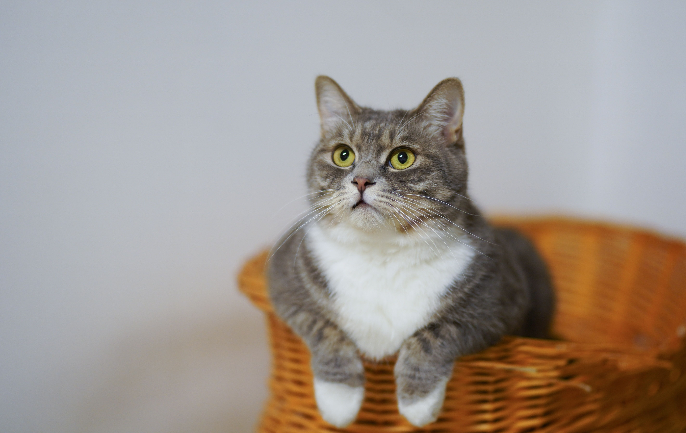
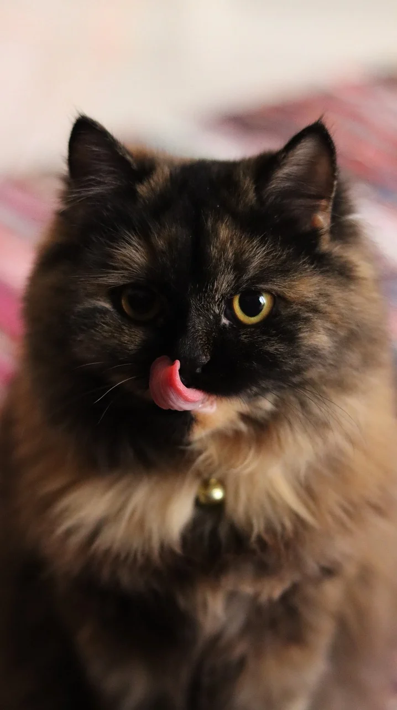
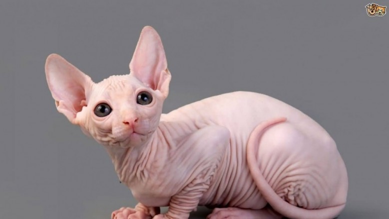
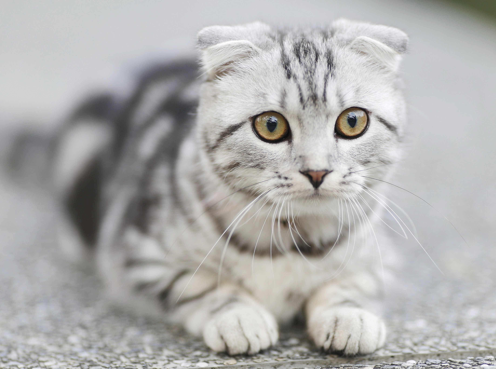

เจาะลึกเรื่องราวและลักษณะนิสัยของเจ้าเหมียวแต่ละสายพันธุ์เพื่อการดูแลที่เหมาะสม

ลายสลิดไม่ใช่ชื่อสายพันธุ์แต่เป็น "ลวดลาย" ตามธรรมชาติที่เก่าแก่ที่สุด มีสัญลักษณ์รูปตัว "M" เด่นชัดบนหน้าผาก สืบเชื้อสายมาจากแมวป่าแอฟริกันโบราณ และอยู่คู่กับมนุษย์มานานหลายพันปี
เลี้ยงง่ายที่สุด มีภูมิคุ้มกันร่างกายแข็งแรง ไม่ค่อยป่วย นิสัยฉลาด ปราดเปรียว มีสัญชาตญาณนักล่าสูง ชอบเล่นซนและรักอิสระ เหมาะมากสำหรับมือใหม่ที่หัดเลี้ยงแมว

มีถิ่นกำเนิดในแถบเปอร์เซีย (ประเทศอิหร่านในปัจจุบัน) ถูกนำเข้าไปยังยุโรปในช่วงศตวรรษที่ 17 และกลายเป็นสัตว์เลี้ยงยอดนิยมของราชวงศ์และขุนนางในยุคอดีตด้วยรูปลักษณ์ที่ดูหรูหรา
นิสัยนิ่ง สงบเสงี่ยม อ่อนโยน ไม่ค่อยร้องโวยวาย แต่ต้องมีเวลาแปรงขนเป็นประจำทุกวันเพื่อป้องกันขนพันกัน และต้องคอยเช็ดคราบน้ำตาบริเวณร่องหน้าสั้นของน้องด้วย

กำเนิดขึ้นที่ประเทศแคนาดาในช่วงปี 1960 เกิดจากการกลายพันธุ์ตามธรรมชาติของลูกแมวที่ไม่มีขน จากนั้นนักบราดเดอร์จึงได้พัฒนาสายพันธุ์ต่อจนกลายเป็นแมวไร้ขนที่มีเอกลักษณ์
ติดเจ้าของมาก ขี้อ้อน และพลังงานสูง ไม่มีขนร่วงกวนใจ แต่ผิวหนังจะขับน้ำมันออกมามากกว่าปกติ ผู้เลี้ยงจึงต้องจับอาบน้ำหรือเช็ดตัวสม่ำเสมอ และควรเลี้ยงในระบบปิด

ต้นกำเนิดมาจากแมวโรงนาชื่อ "ซูซี่" ในสก็อตแลนด์เมื่อปี 1961 ซึ่งเกิดมาพร้อมกับหูที่พับลงมาอย่างน่ารัก จากนั้นจึงนำไปผสมพันธุ์และพัฒนาจนกลายเป็นสายพันธุ์ที่โด่งดัง
ตัวกลม นิสัยเรียบร้อย สุภาพ ขี้เล่นพอประมาณ สิ่งสำคัญคือต้องคอยตรวจเช็คความสะอาดในใบหูที่พับอยู่เพื่อป้องกันไรหู และควรศึกษาเรื่องพันธุกรรมโรคกระดูก (OCD) ด้วย